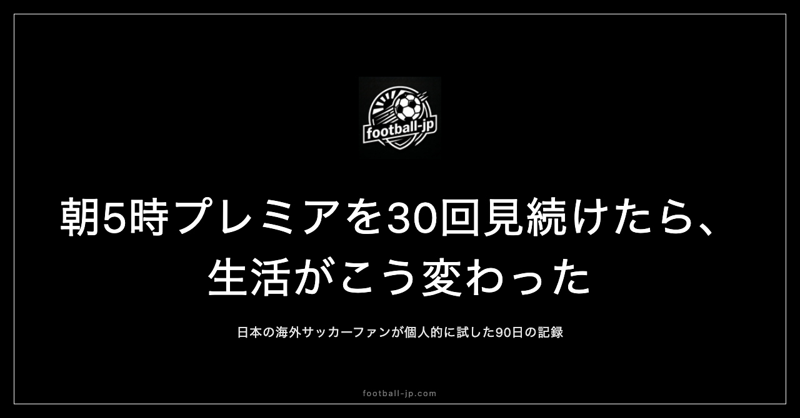

土曜の朝5時にプレミアリーグを30回見続けたら、生活がこう変わった
最初はたまたま眠れなかっただけだった。プレミアリーグのキックオフが朝5時で、そのまま観た。30回繰り返した今、土曜の早朝は目覚まし不要で目が覚める。習慣化の過程と、早朝観戦が変えたものの記録。

なぜプレミアリーグが朝5時になるのか
プレミアリーグの試合は日本時間で深夜から早朝にかけて行われる。現地時間15時キックオフが日本時間23時、現地20時キックオフが翌深夜4時になる。早朝5〜6時台にあたる試合も毎節存在する。
早朝観戦の起点は、三笘薫がブライトンでスタメンに定着し始めた時期だった。「Mitoma starts」という情報を前夜に確認し、アラームを4時45分に設定して布団の中でキックオフを待つ——これが最初の1回だ。その後同じ行動を繰り返すことで、現在に至る。
10回目で起きた「前日からの楽しみ」への気づき
早朝観戦を10回ほど重ねた頃に、深夜観戦との構造的な差異に気づいた。深夜に試合を観るとき、「そういえば今夜試合があった」と気づくのは直前になることが多い。一方、早朝観戦は前夜から「明日の朝に試合がある」という意識が始まる。
就寝前にfootball-jp.comで試合時間を確認し、アラームをセットする。このルーティン自体が観戦体験の前半として機能している。「観戦体験の時間的な長さ」が深夜観戦より長い、というのが正確な表現だ。
30回で「土曜の朝だけ朝型」になった
30回を超えた頃、土曜の早朝にアラームなしで目が覚めるようになった。体が「この時間に試合がある」というパターンを記憶した結果だ。「朝型になった」というよりも「土曜の朝だけ早起きになった」という表現が正確で、平日の起床時間は変わっていない。
好きなことへの反応が身体レベルで習慣化する、というのはよく言われるが、「早起きを考えなくなる」という感覚が近い。起きるかどうかを意識的に判断する前に、体が動いている状態になった。
早朝観戦で発見した3つの意外なメリット
30回を経て明確になった早朝観戦の利点は以下の3点だ。
一つ目は頭がクリアで試合への集中度が高いこと。深夜観戦には「早く寝なければ」という罪悪感が伴うが、朝5時にはその日がまだ始まっていない感覚がある。余計な気負いなく試合に向き合える。
二つ目は試合後の時間が長いこと。深夜に観終わると就寝するしかないが、朝5時に観れば終了後も半日以上残っている。余韻を持ちながら普通に1日を過ごせる。
三つ目は振り返りが当日中にできること。観た直後に分析記事を読む間隔が短く、記憶が新鮮なうちに内容を整理できる。観て終わりではなく、観た内容を消化するサイクルが当日中に完結する。
イギリスの午後と日本の朝が同じ画面にある感覚
深夜観戦が「起き続けている」感覚で行う観戦だとすると、早朝は「その日最初のこと」として試合を観る感覚だ。頭がクリアな状態で観るため、戦術的な流れや選手の動きへの注意が自然と向く。
ピッチの向こうはイギリスの午後。満員のスタジアムと、日本の薄暗い朝——この非対称な時差の重なりが、海外サッカー観戦にしかない体験として機能している。現地観客がスタジアムで声を上げている同じ瞬間に、こちらは静かな部屋でそれを受け取る。この対比は、30回繰り返しても新鮮さを保ち続けている。
「起きたくない日」を超えて起きる仕組み
30回の中に「起きるのが辛い朝」も当然あった。そのときに実際に起きるかどうかを決めていた最大の要因は「三笘薫がスタメンかどうか」だった。前夜に「Mitoma starts」の情報があれば、どれだけ眠くても起きた。情報がない状態では少し迷いが生まれた。
15回を超えた頃から、アラームが鳴る前に目が覚める頻度が増えた。「好きなことがあると早起きを苦に感じなくなる」というより「起きるかどうかを考える前に体が動く」という状態が正確だ。意識的な選択以前に行動が起きるようになることが、習慣化の本質だと思っている。
集中力と満足感の変化、変わらなかったもの
30回を通じて変化したのは生活リズムだけではない。試合への集中度が上がった。早朝の清明な状態で観ると、戦術の流れや個々の選手の動きが深夜観戦より鮮明に入ってくる。三笘薫のドリブルルートの選択、久保建英のポジショニングの傾向、上田綺世のフィニッシュの形——こういった細部への注意が、早朝観戦で研ぎ澄まされた。
変わらなかったのは「良い試合を観た後の充足感」だ。時間帯に関わらず、観てよかったという感覚の質は同じだ。むしろ早朝の方が、その感覚が澄んだ形で残る。
30回より「あの一試合」のほうが記憶に残る理由
30回という数字を振り返ると、回数より「内容」のほうが記憶に刻まれている。最も鮮明に残っているのは三笘薫がゴールを決めた試合の朝だ。朝5時に静かな部屋で一人観ていた。得点の瞬間、声が出た。外はまだ暗かった。画面の中ではスタジアムが沸いていた。「夜明け前の一人の部屋に、何千人分の熱狂が届いている」という感覚は今も鮮明に残っている。
30回観た、という事実は「ここまで好きだ」ということの行動による証明だ。三笘薫がブライトンで輝き、日本代表がW杯を目指し、football-jpを作って毎日データを更新していた時期——その記録が30回の早朝観戦という形に収まっている。